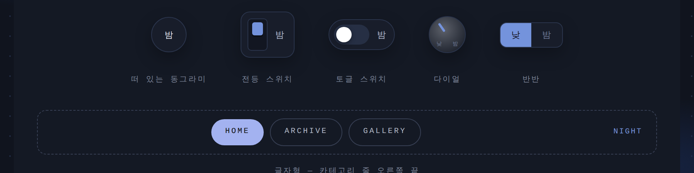

러브로그 · 꾸미기
🌗 듀얼 테마
한 홈에 두 가지 모습(A/B)을 담아 두고 방문자가 전환 버튼으로 오가는 기능입니다.
설정 순서와 주의할 점은 따로 정리한 안내가 있습니다. 듀얼 테마 안내 열기 →
전환 버튼의 모양·위치(자유 위치 좌표, 모바일 설정 포함)는 지금 보고 있는 모드에 저장됩니다 — A에서 정한 자리와 B에서 정한 자리가 따로. 한쪽에서만 정했으면 다른 쪽은 공용 값을 씁니다.
편집할 모드
듀얼 테마를 켜고 A · B를 담아 둔 홈이면 꾸미기 창 왼쪽 맨 위에 「편집할 모드」 셀렉트가 생깁니다. 고르면 화면도 그 모드로 바뀌고, 그 뒤에 저장하는 꾸미기 · 위젯은 그 모드에만 들어갑니다. 저장하지 않은 변경이 있으면 모드를 바꾸기 전에 한 번 확인합니다.
⏱ 시간에 따라 자동 전환
듀얼 테마 탭의 「시간에 따라 자동 전환」을 켜고 A · B가 시작할 시각을 정하면, 방문자 기기의 시각 기준으로 모드가 바뀝니다(예: 낮은 A, 저녁 7시부터 B). 방문자가 전환 버튼을 직접 누르면 그 방문 동안은 손으로 고른 쪽을 유지합니다.
🖼 사진 버튼
버튼 모양에서 〈버튼 — 사진〉을 고르면 A·B 모드마다 올린 그림이 버튼이 됩니다. 크기 슬라이더(36~200px)와 〈원형으로〉, 실제 크기 미리보기가 함께 있고, GIF 움짤은 8MB까지 그대로 움직입니다. 배경이 투명한 PNG를 쓸 때 그림자와 둥근 모서리가 거슬리면 〈효과 없이〉를 켜면 그림만 뜹니다. 한쪽에서 사진으로 바꾸면 반대쪽 모드도 사진 버튼이 되고, 위치는 모드마다 그대로입니다. 사진이 없는 쪽은 글자로 나옵니다.
버튼에 지금 모드 표시
전환 버튼은 기본적으로 〈누르면 갈 모드〉를 보여줍니다 — A를 보고 있으면 버튼에 B의 이름·색·사진이 뜨는 방식입니다. 지금 어디에 있는지가 뜨는 편이 편하면 듀얼 설정의 〈버튼에 지금 모드 표시〉를 켜세요. 이름·색·사진이 모두 지금 보고 있는 모드 기준으로 바뀝니다. 회전 다이얼·분할 버튼은 늘 양쪽을 보여주므로 해당이 없습니다.

사진 자리img/ll-dual.png🌗 위젯 내용 함께 쓰기
- 〈위젯 구성도〉를 담아 두면 모드마다 위젯이 따로 저장됩니다. 배너칸처럼 두 모드에 같은 내용을 두려면 위젯 ✎ 편집의 「🌗 두 모드에 같은 내용」을 켜고 저장하세요.
- 다른 모드에 같은 종류 위젯이 있으면 순서대로 짝지어 내용이 들어가고, 없으면 새로 하나 넣습니다.
- 자리 · 스킨 · 색 · 글꼴 · 표시 범위는 모드마다 따로 둡니다. 체크를 끄면 연결이 풀립니다.